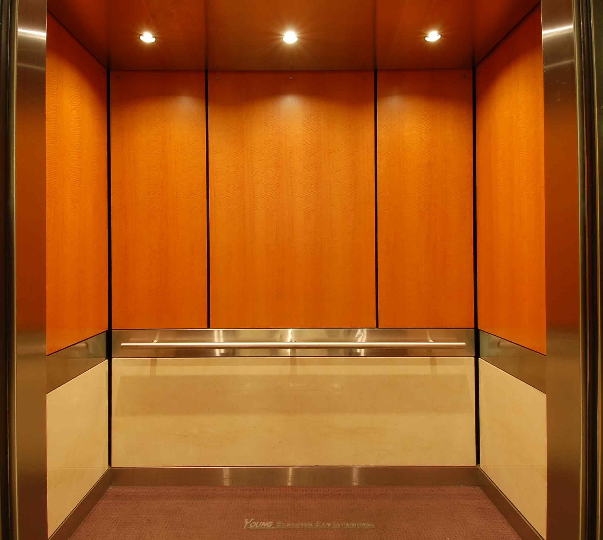

Elevator.js fixes those awkward "scroll to top" moments the old fashioned way.
First we need to get to the bottom of the page.
Because you're already at the top.
So a "back to top" button wouldn't make sense.
Down down down.
Wow, all this scrolling.
This had better be worth it.
It's going to take ages to get back to the top.
If only we had an easy way to get back...
...that is both functional and fun.
I call "back to top" buttons elevators...
...they should really behave more like them.
Ok, here we are... click that elevator!
This is an elevator page. We found this hard to implement Keep scrolling down
